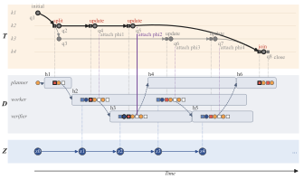
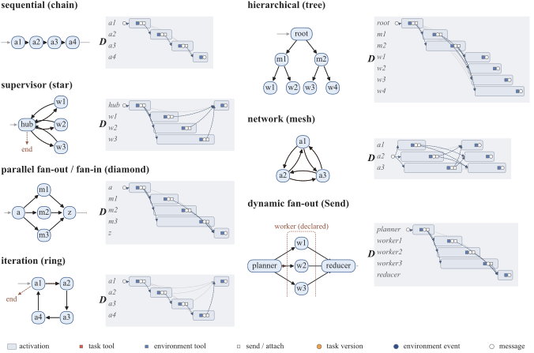
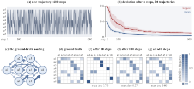
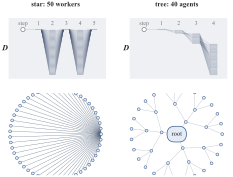
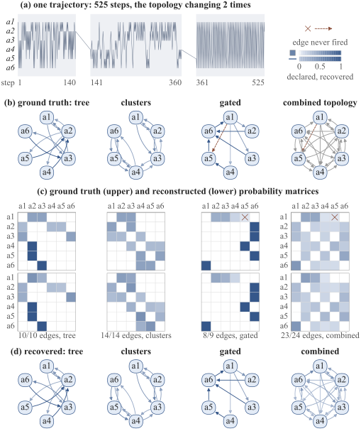
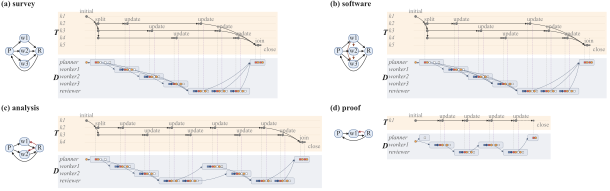

Dynamic Interaction Graph
A directed bipartite graph of information events and agent activations. It records input events, ordered tool-call occurrences, returned events, deliveries, timing, and routing dependencies.
A shared computational record of how agents interact, how their tasks evolve, what evidence supports those changes, and how all of it connects to the environment - without prescribing a fixed workflow or exposing private reasoning.
Under review at ICLR 2026
Open-ended agent teams create and transform work while they act: they propose tasks, revise objectives, split and join subtasks, exchange evidence, and reorganize after failures. Environment state alone does not capture this collaborative state, while transcripts entangle it with surface language and incidental ordering.
DIG-TAG makes the consequential structure created by interaction a first-class object. Its two linked views preserve both the flow of information and the evolving identity, version history, and evidence of shared work.

A DIG-TAG instance combines a Dynamic Interaction Graph, a Task Activity Graph, the shared environment, and the available task, environment, and information tools. Persistent agent identities connect the views.
A directed bipartite graph of information events and agent activations. It records input events, ordered tool-call occurrences, returned events, deliveries, timing, and routing dependencies.
A versioned graph of task nodes, occurrence-identified task actions, and evidence attachments. It preserves task identity, specification, reported state, ancestry, frontier, and lifecycle.
The external world agents observe and change. Environment tools return fresh DIG events, allowing task declarations and evidence to remain connected to externally verifiable effects.
An activation is one invocation of an agent. Its input set is fixed at activation start, and its ordered calls may return new events. Repeated invocations and repeated calls remain distinct occurrences, so cycles, retries, concurrency, and dynamic routing are preserved rather than collapsed.
Task versions are immutable. Every update appends a version; evidence targets an exact version and does not silently carry forward. Provenance records where a claim came from, while validity remains a separate, domain-specific judgment.
| View | What it answers |
|---|---|
| DIG | Who acted, what information reached them, which tools they called, and where outputs flowed. |
| TAG | What work exists, how it was revised or decomposed, which version is current, and what evidence supports it. |
| DIG + TAG | Who produced a task version, from which inputs, with what evidence and interaction context. |
TAG uses six structural task operations. Applications supply the meaning of goals, states, evaluation rules, and domain effects; the interface captures how work changes without fixing what the work must be.
OPENCreate a fresh task identity and its initial version with status open.
EDITAppend a version that revises the task specification while preserving reported state.
UPDATEAppend a version that changes reported state while preserving the task specification.
SPLITDecompose one version into multiple versions with distinct task identities.
JOINIntegrate versions from distinct task identities into a single successor version.
CLOSEDeclare that an identity needs no further work; closure does not certify success.

DIG can encode any finite graph execution whose occurrences and relations are recorded. Aggregating activations by agent identity reconstructs realized interaction graphs; retaining occurrence-level records preserves repeated calls, parallel overlap, branch choices, and dynamically created workers.
TAG reconstructs finite histories of task introduction, revision, decomposition, integration, and closure. Because task actions are attributed to DIG call occurrences, a query can follow a result through its version lineage to the responsible activation, its available context, and attached evidence.
Compare interaction structures and routing patterns by task, phase, or agent group to inform recipient selection, review assignment, or revised decomposition.
Use failed checks, task lineage, information flow, and call attribution to identify what should be rechecked or revised.
Relate public context and call choices to observations, task effects, assessed outcomes, and costs to learn transferable policies.
The paper evaluates whether DIG-TAG faithfully records known collaboration structures, recovers stochastic routing, reconstructs a long-horizon trace when supplied with perfect phase chunking, scales to larger teams, and transfers across distinct task domains. It also reports that directly optimizing over the collaborative state exposed by DIG-TAG improves grounded task completion over baselines across diverse environments.



A single 525-step execution changes topology twice. With perfect chunking - the known boundaries supplied to the analysis - DIG-TAG aggregates the occurrence-level records inside each phase and recovers that phase's realized interaction graph and routing frequencies. Aggregating the full trace recovers 23 of 24 combined edges.

Agents need not reason in graphs or reveal chain-of-thought. They may call task tools directly, or a wrapper or evaluated parser may emit equivalent typed effects from observable behavior. Unsuccessful, conflicting, and irrelevant behavior remains representable; cooperation and correctness are assessed downstream.